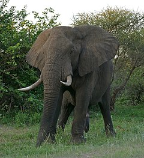
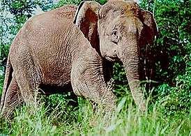
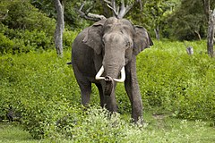

Elephants are the largest land animals on earth. They live in South-East Asia and Africa in tropical forests and savannas. There is a fat pad in the center of the elephant's foot, which "flattens" every time the elephant lowers its foot, increasing the area of support.
Loxodonta africana
Elephas maximus indicus
Elephas maximus borneensis
Elephas maximus
The average life span of an elephant in nature is about 70 years. In captivity, with proper care and feeding, elephants can live up to 75-80 years.
1. Elephants are the closest relatives of extinct mammoths.
2. Contrary to popular myth, elephants are not afraid of mice (see interesting facts about mice).
3. Elephants have a surprisingly good memory. There are cases when elephants took revenge on offenders after many years. However, good elephants also do not forget.
4. It is a well — known fact that elephants are the largest land animals on earth.
5. The heart of an elephant can reach a weight of 25-30 kg. In a normal rhythm, it contracts about once every two seconds, driving blood through the huge body.
6. In the wild, elephants spend up to 20 hours a day searching for food.
7. An adult elephant drinks 100-200 liters of water a day, or even more.
8. Elephants live an average of half a century. The most famous centenarian is an elephant named Lin Wang, who lived in this world for 86 years.
9. An elephant's trunk can hold up to eight liters of water.
10. Elephants have an extremely sharp sense of smell, much sharper than humans.